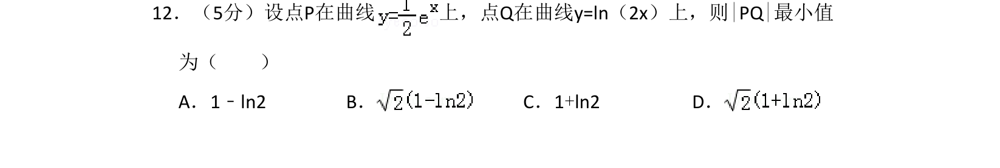
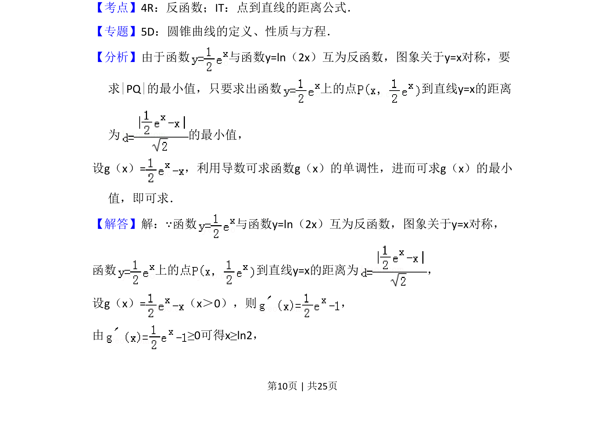
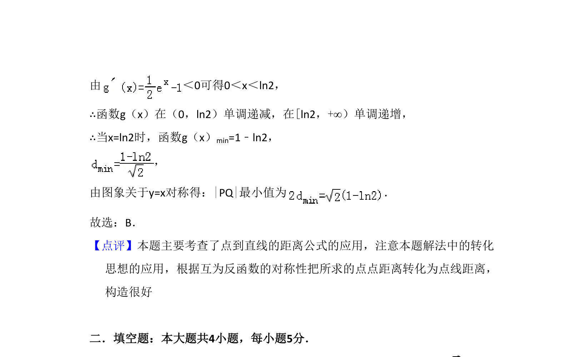

考点：反函数 点到直线距离公式 导数求最值

本题研究互为反函数的两曲线上的点间最小距离，利用对称性转化为点到直线距离并借助导数求最值。


📄 原 PDF 第 10 页：
素材/真题/吉林/2008-2024·（吉林）数学高考真题/2012年高考数学试卷（理）（新课标）（解析卷）.pdf
12．（5分）设点P在曲线 上，点Q在曲线y=ln（2x）上，则|PQ|最小值 为（ ） A．1﹣ln2 B．C．1+ln2 D．
【考点】4R：反函数；IT：点到直线的距离公式．菁优网版权所有 【专题】5D：圆锥曲线的定义、性质与方程． 【分析】由于函数 与函数y=ln（2x）互为反函数，图象关于y=x对称，要 求|PQ|的最小值，只要求出函数 上的点 到直线y=x的距离 为 的最小值， 设g（x）=，利用导数可求函数g（x）的单调性，进而可求g（x）的最小 值，即可求． 【解答】解：∵函数 与函数y=ln（2x）互为反函数，图象关于y=x对称， 函数 上的点 到直线y=x的距离为 ， 设g（x）=（x＞0），则 ， 由≥0可得x≥ln2，